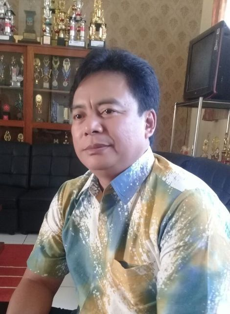

Sambutan Kepala Sekolah
 Puji syukur atas rahmat dan karunia Allah SWT sehingga saya mampu menuliskan kata sambutan Kepala sekolah dalam rangka launching website sekolah SMPN 1 Cilawu sebagai sarana informasi dan komunikasi up date sekolah ini melalui dunia maya. Untuk itu saya mengucapkan banyak terima kasih kepada semua pihak yang mendukung launchingnya website ini. Di era global dan pesatnya Teknologi Informasi ini, tidak dipungkiri bahwa keberadaan sebuah website untuk suatu instansi seperti halnya di SMPN 1 Cilawu sangatlah penting. Wahana website tersebut dapat digunakan sebagai sarana informasi dan komunikasi pihak sekolah dengan siswa, alumni, dan stake holder secara luas. Selanjutnya, website sekolah dapat berfungsi sebagai media pembelajaran yang memuat blog-blog yang dibuat oleh guru-guru. Di dalam blog tersebut guru dapat menuliskan berbagai artikel tentang pembelajaran atau materi penting pelajaran yang bersangkutan. Bahkan guru dapat memberikan tugas-tugas Mandiri kepada peserta didik melalui blog yang disiapkan, sehingga akan menunjang kegiatan pembelajaran berbasis Teknologi Informasi. Selain itu juga website juga dapat menjadi sarana promosi sekolah yang cukup efektif. Berdasarkan hal tersebut saya harapkan nantinya berbagai kegiatan positip sekolah (intrakurikuler & ekstrakurikuler) dapat diunggah dari website SMPN 1 Cilawu, sehingga masyarakat dapat mengetahui kegiatan-kegiatan dan prestasi-prestasi yang telah berhasil diraih oleh sekolah ini. Akhirnya kami mengharapkan masukan dari berbagai pihak untuk website ini agar kami terus belajar dan meng-up date diri, sehingga tampilan, isi dan mutu website akan terus berkembang dan lebih baik nantinya. Terima kasih atas kerjasamanya, maju terus untuk mencapai SMPN 1 Cilawu yang lebih cerdas.>
SATRIAGA UTAMA